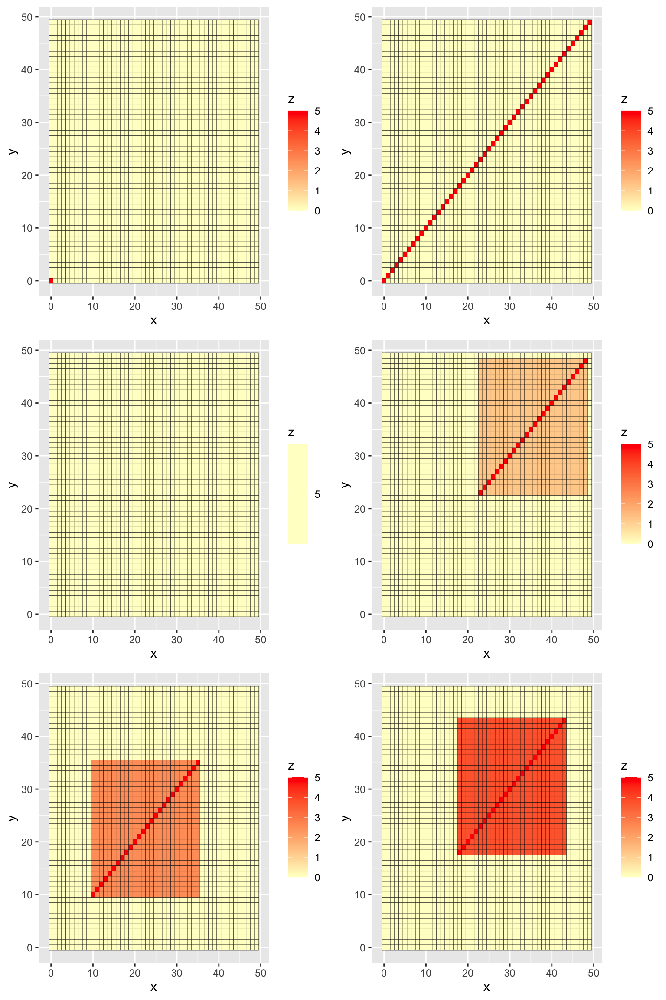
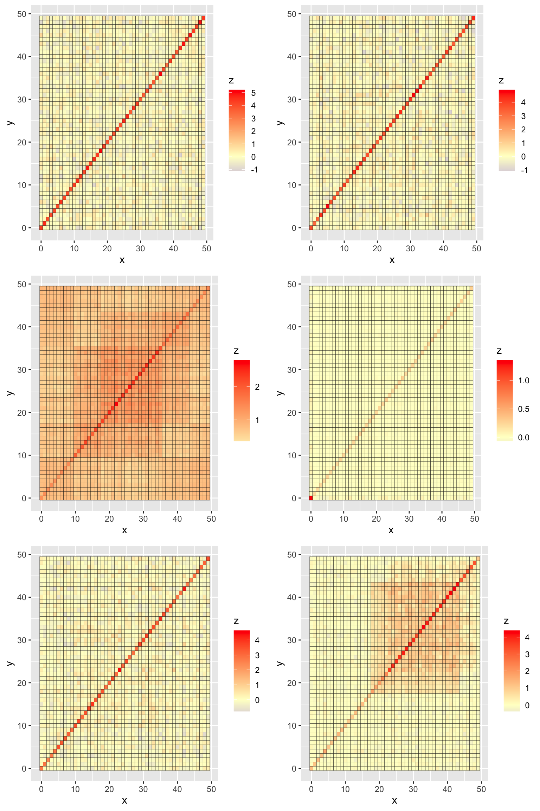
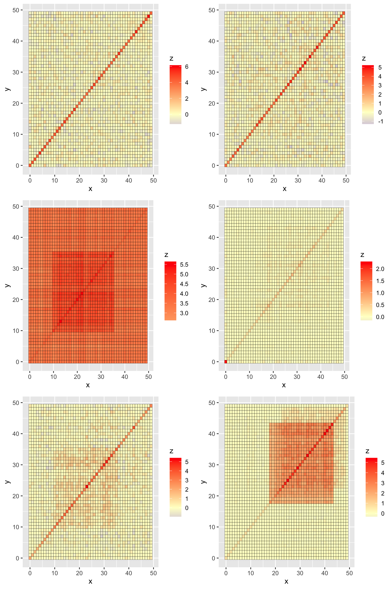

Last updated: 2022-11-18
Checks: 6 1
Knit directory: udr-paper/
This reproducible R Markdown analysis was created with workflowr (version 1.6.2). The Checks tab describes the reproducibility checks that were applied when the results were created. The Past versions tab lists the development history.
Great! Since the R Markdown file has been committed to the Git repository, you know the exact version of the code that produced these results.
Great job! The global environment was empty. Objects defined in the global environment can affect the analysis in your R Markdown file in unknown ways. For reproduciblity it’s best to always run the code in an empty environment.
The command set.seed(20221016) was run prior to running the code in the R Markdown file. Setting a seed ensures that any results that rely on randomness, e.g. subsampling or permutations, are reproducible.
Great job! Recording the operating system, R version, and package versions is critical for reproducibility.
To ensure reproducibility of the results, delete the cache directory vary_ncomp_cache and re-run the analysis. To have workflowr automatically delete the cache directory prior to building the file, set delete_cache = TRUE when running wflow_build() or wflow_publish().
Great job! Using relative paths to the files within your workflowr project makes it easier to run your code on other machines.
Great! You are using Git for version control. Tracking code development and connecting the code version to the results is critical for reproducibility.
The results in this page were generated with repository version 9542e59. See the Past versions tab to see a history of the changes made to the R Markdown and HTML files.
Note that you need to be careful to ensure that all relevant files for the analysis have been committed to Git prior to generating the results (you can use wflow_publish or wflow_git_commit). workflowr only checks the R Markdown file, but you know if there are other scripts or data files that it depends on. Below is the status of the Git repository when the results were generated:
Ignored files:
Ignored: .DS_Store
Ignored: .Rhistory
Ignored: .Rproj.user/
Ignored: analysis/.DS_Store
Ignored: analysis/power_vs_fdr_cache/
Ignored: analysis/vary_ncomp_cache/
Untracked files:
Untracked: analysis/tpr&fpr_code.Rmd
Untracked: site_libs/
Note that any generated files, e.g. HTML, png, CSS, etc., are not included in this status report because it is ok for generated content to have uncommitted changes.
These are the previous versions of the repository in which changes were made to the R Markdown (analysis/vary_ncomp.Rmd) and HTML (docs/vary_ncomp.html) files. If you’ve configured a remote Git repository (see ?wflow_git_remote), click on the hyperlinks in the table below to view the files as they were in that past version.
| File | Version | Author | Date | Message |
|---|---|---|---|---|
| Rmd | 9542e59 | yunqiyang0215 | 2022-11-18 | wflow_publish("analysis/vary_ncomp.Rmd") |
| html | 004be39 | yunqiyang0215 | 2022-11-18 | Build site. |
| Rmd | 4b42b7c | yunqiyang0215 | 2022-11-18 | wflow_publish("analysis/vary_ncomp.Rmd") |
| html | 202516f | yunqiyang0215 | 2022-11-18 | Build site. |
| Rmd | 8759e50 | yunqiyang0215 | 2022-11-18 | wflow_publish("analysis/vary_ncomp.Rmd") |
| html | 102388e | yunqiyang0215 | 2022-11-18 | Build site. |
| Rmd | effc68a | yunqiyang0215 | 2022-11-18 | wflow_publish("analysis/vary_ncomp.Rmd") |
This file try to assess why regularized methods is stable across different number of components. I compare the patterns between fitted Us (top 6 patterns) and the truth.
The truth contains 6 different patterns.
source("./code/simulation_func.R")
library(udr)
library(mashr)
library(mvtnorm)
library(LaplacesDemon)
library(ggplot2)
require(gridExtra)
library(cowplot)#### True param in simulation
K = 6
R = 50
s = 5
n.train = 1e3
param = list(w = rep(1/K, K), U = list(), V = diag(R))
ncomp = 100set.seed(4)
# True Us: 1 singleton + equal_effect + identity + 3 partial shared + 4 rinvWishart.
param$U <- sim_U_true(R, s, identity = TRUE, partial_sharing = TRUE,
equal_effect = TRUE, num_singleton = 1)
X.train <- simulate_ud_data(n.train, param$w,param$U,param$V)
# Initialization
set.seed(888)
U.init = c()
for (k in 1:ncomp){
U.init[[k]] <- udr:::sim_unconstrained(R)
}
f0 = ud_init(X = X.train, V = param$V, U_scaled = NULL, U_unconstrained = U.init, n_rank1 = 0)plot.true <- list()
for (i in 1:6) {
df <- expand.grid(x = 0:49, y = 0:49)
df$z <- c(t(param$U[[i]]))
p <- ggplot(df, aes(x = x, y = y, fill = z)) + geom_tile(color = "black") +
scale_fill_gradient2(low = "#075AFF",
mid = "#FFFFCC",
high = "#FF0000")
plot.true[[i]] <- p
}plot_grid(plot.true[[1]], plot.true[[2]], plot.true[[3]],
plot.true[[4]], plot.true[[5]], plot.true[[6]],
ncol = 2, byrow = TRUE)
| Version | Author | Date |
|---|---|---|
| 004be39 | yunqiyang0215 | 2022-11-18 |
fit.ted_reg = ud_fit(f0, control = list(unconstrained.update = "ted", resid.update = 'none',
tol = 1e-02, tol.lik = 1e-2, n0 = 0, lambda = round(R), maxiter = 5e3), verbose=FALSE)
fit.ed_reg = ud_fit(f0, control = list(unconstrained.update = "ed", resid.update = 'none',
tol = 1e-02, tol.lik = 1e-2, n0 = round(R), lambda = 0, maxiter = 5e3), verbose=FALSE)
Warning: The above code chunk cached its results, but it won’t be re-run if previous chunks it depends on are updated. If you need to use caching, it is highly recommended to also set knitr::opts_chunk$set(autodep = TRUE) at the top of the file (in a chunk that is not cached). Alternatively, you can customize the option dependson for each individual chunk that is cached. Using either autodep or dependson will remove this warning. See the knitr cache options for more details.
sum(fit.ted_reg$w > 1e-2)
sum(fit.ed_reg$w > 1e-2)
# [1] 5
# [1] 15U.ted_reg <- lapply(fit.ted_reg$U,function (e) "[["(e,"mat"))
U.ed_reg <- U <- lapply(fit.ed_reg$U,function (e) "[["(e,"mat"))
indx1 = order(fit.ted_reg$w, decreasing = TRUE)[1:6]
indx2 = order(fit.ed_reg$w, decreasing = TRUE)[1:6]ted_reg <- list()
ed_reg <- list()
for (i in 1:6) {
U <- U.ted_reg[[indx1[i]]]
df <- expand.grid(x = 0:49, y = 0:49)
df$z <- c(t(U))
p <- ggplot(df, aes(x = x, y = y, fill = z)) + geom_tile(color = "black") +
scale_fill_gradient2(low = "#075AFF",
mid = "#FFFFCC",
high = "#FF0000")
ted_reg[[i]] <- p
}
for (i in 1:6) {
U <- U.ed_reg[[indx2[i]]]
df <- expand.grid(x = 0:49, y = 0:49)
df$z <- c(t(U))
p <- ggplot(df, aes(x = x, y = y, fill = z)) + geom_tile(color = "black") +
scale_fill_gradient2(low = "#075AFF",
mid = "#FFFFCC",
high = "#FF0000")
ed_reg[[i]] <- p
}plot_grid(ted_reg[[1]], ted_reg[[2]], ted_reg[[3]],
ted_reg[[4]], ted_reg[[5]], ted_reg[[6]],
ncol = 2, byrow = TRUE)
plot_grid(ed_reg[[1]], ed_reg[[2]], ed_reg[[3]],
ed_reg[[4]], ed_reg[[5]], ed_reg[[6]],
ncol = 2, byrow = TRUE)
| Version | Author | Date |
|---|---|---|
| 004be39 | yunqiyang0215 | 2022-11-18 |
sessionInfo()
# R version 4.1.1 (2021-08-10)
# Platform: x86_64-apple-darwin20.6.0 (64-bit)
# Running under: macOS Monterey 12.0.1
#
# Matrix products: default
# BLAS: /usr/local/Cellar/openblas/0.3.18/lib/libopenblasp-r0.3.18.dylib
# LAPACK: /usr/local/Cellar/r/4.1.1_1/lib/R/lib/libRlapack.dylib
#
# locale:
# [1] en_US.UTF-8/en_US.UTF-8/en_US.UTF-8/C/en_US.UTF-8/en_US.UTF-8
#
# attached base packages:
# [1] stats graphics grDevices utils datasets methods base
#
# other attached packages:
# [1] cowplot_1.1.1 gridExtra_2.3 ggplot2_3.3.5
# [4] LaplacesDemon_16.1.6 mvtnorm_1.1-3 mashr_0.2.51
# [7] ashr_2.2-47 udr_0.3-142 workflowr_1.6.2
#
# loaded via a namespace (and not attached):
# [1] Rcpp_1.0.8.3 invgamma_1.1 lattice_0.20-44 assertthat_0.2.1
# [5] rprojroot_2.0.2 digest_0.6.28 utf8_1.2.2 truncnorm_1.0-8
# [9] R6_2.5.1 plyr_1.8.6 evaluate_0.14 highr_0.9
# [13] pillar_1.6.4 rlang_0.4.12 irlba_2.3.5 whisker_0.4
# [17] jquerylib_0.1.4 Matrix_1.3-4 rmarkdown_2.11 labeling_0.4.2
# [21] stringr_1.4.0 munsell_0.5.0 mixsqp_0.3-43 compiler_4.1.1
# [25] httpuv_1.6.3 xfun_0.27 pkgconfig_2.0.3 SQUAREM_2021.1
# [29] htmltools_0.5.2 tidyselect_1.1.1 tibble_3.1.5 fansi_0.5.0
# [33] crayon_1.4.1 dplyr_1.0.7 withr_2.4.2 later_1.3.0
# [37] grid_4.1.1 gtable_0.3.0 lifecycle_1.0.1 git2r_0.28.0
# [41] magrittr_2.0.1 scales_1.1.1 stringi_1.7.5 farver_2.1.0
# [45] fs_1.5.0 promises_1.2.0.1 ellipsis_0.3.2 vctrs_0.3.8
# [49] generics_0.1.2 rmeta_3.0 tools_4.1.1 glue_1.4.2
# [53] softImpute_1.4-1 purrr_0.3.4 abind_1.4-5 parallel_4.1.1
# [57] fastmap_1.1.0 yaml_2.2.1 colorspace_2.0-2 knitr_1.36